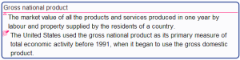

Default contents of node details and note
 |
The default content starts from the beginning of the details or note text till the occurrence of a valid feature marker, as defined in the next section.
You can define what is the default contents of the node details and notes of a branch. Just add a sibling node named Details&Note and having the style |  The internal default values of the details and note default features |
- Node details
The node details are usually displayed just under the node core. If they are shrunked, a small triangle under the first character of the node core is displayed instead. To shrink or expand the details, just click this triangle.
- definition
This feature is the representation of a concept or term by a descriptive statement which serves to differentiate it from related concepts/terms. In encyclopedias like Wikipedia, the beginning of an entry is usually a concept definition. Term definition can be found in monolingual dictionaries.
- Node note
The node note is usually presented as hover text. If you prefer to see them under the node details, click in the menu
View > Notes > Display notes in map. If you have a large monitor and often need to edit notes, we suggest you setView > Notes > Display note panel. - context
This feature is an example of use, i.e. a text which illustrates the use of a concept or designation.
- Pangloss user guide
- Intro
- Details and notes
- Default contents
- Extra contents
- Reference